1926—The New-Way Course in Fashionable Clothes-Making
Lesson 1—How to Study
How to Study
Before anything else, you must know exactly how to approach your lessons and how to master each one. You realize of course that you cannot jump immediately into the making of actual dresses and blouses. You must begin from the beginning, learning all the important fundamental principles of sewing, before you can expect to make clothes that you will be proud of. And you must master each lesson thoroughly before you proceed to the next, as it is only on the solid foundation of sewing knowledge that you can build expert clothes-making ability.
Take your lessons seriously. Approach each one with the determination to master it. Do not start the second lesson until you have done ALL the work on the first—until you feel that you know thoroughly every detail covered in that lesson. Try to do the home-work required in each book without referring to the lessons, but do not attempt your home-work until you have studied and practiced the lessons to your satisfaction.
You need send in only the questions and samples I ask for at the end of the lessons. You may use any little scraps about the house for your samples—making them about 3 or 4 inches long.
Occasionally I shall ask you to send in a garment so that I may better judge your advancement. However, all garments that you send will be returned to you promptly, or if you have no use for some of the garments described in the lessons you need not make them. And in the making of any garment you use just whatever material you wish.
What You Will Need
Just as an artist cannot paint a beautiful picture with poor brushes and canvas, so a dressmaker cannot create beautiful dresses with poor equipment. There are several things you will need in your study of clothes-making and it is best that you have them right from the start.
Following is a list of the articles you will require to do successfully the work outlined in this course:
- Needles
- Pins
- Scissors and Shears
- Thimble
- Thread
- Tape Measure
- Yard Stick
- Tailor's Chalk
- Skirt Marker
- Dress Form
- Emery
- Bodkin
- Sewing Table (any long flat-topped table will do—but keep it always available for sewing only)
- Pressing Supplies
- Tracing Wheel
You probably own a sewing machine and all the attachments. If you do you will be able to save a great deal of time and money. If you own a sewing machine but no attachments, your sewing machine dealer will supply you. Try always to work in a room that is light and airy, and on a table that is clear of all hindering articles.
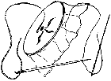Hand Sewing Needles
For hand sewing the needle should be large enough to carry the thread easily. If you use a needle that is too small it will cut the thread, and a too-large needle may tear the cloth. For basting we suggest the long needle used by milliners.
The needles commonly used in dressmaking are called Sharps. In your sewing basket you should keep a supply of Sharps Nos. 5, 6, 7, 8, 9 and 10. For very heavy work use Nos. 5 and 6 with threads 20 to 40 (or silk C. D. and E.) Use needles 7 and 8 for threads Nos. 60 to 90, and needles 9 and 10 for threads Nos. 100 to 150.
This information may seem uninteresting to you now, but you will find it very valuable later when you are ready to make actual clothes.
Threads
You will need three kinds of thread during your course—cotton, linen and silk. No. 8 cotton and heavy linen thread are appropriate for sewing on buttons and wherever great strength is needed. The finer cottons should be used for machine and hand work. Cotton thread coarser than 60 or finer than 150 is rarely used for machine work.
Silk thread is used on silk, wool and all mixtures of silk and wool. For hand and machine work you will find the thread lettered A, O and OO for the most satisfactory. For buttonholes and heavy hand sewing use letters B, C, D and E.
Basting Thread
For basting purposes, buy the regular basting thread which is sold on large spools. It is more economical, and more satisfactory than the better grades of thread. Use Nos. 60 and 70, but never attempt to use this thread on the sewing machine.
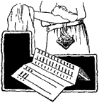Pins
You will need a good supply of pins for your lessons on patterns and drafting and design. Dressmakers' pins which are medium-sized and have sharp points can be bought in boxes. However, the kind that are sold on paper rolls are satisfactory if they are not too thick and blunt.
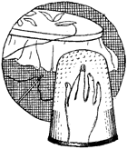Thimble
A thimble is a valuable adjunct to hand sewing and you should not be without one. It may be of celluloid, aluminum or silver, but it should fit the middle finger of the right hand snugly. Do not use a large thimble that slips off the finger, nor one so long that it interferes with the first joint of the finger on which it is worn.
Bodkin
A bodkin is very much similar in appearance to the darning needle except that it has a very blunt point. It is used to draw ribbon or tape through beading or casing.
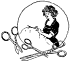Scissors
Three pairs of scissors are necessary for home sewing—one pair of shears, one pair of small scissors, and one pair of buttonhole scissors. The shears, which should be the regulation dressmaking type, should be from 8 to 10 inches long, and as they are used for cutting material they should always be kept well sharpened. Choose a pair with wide slots for the fingers as they are always more comfortable to use.
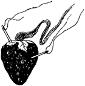Emery
You will find the emery bag very helpful in polishing needles and keeping them from rusting. It can be purchased at any notion counter.
Tape Measure and Yard Stick
The most convenient tape measure is one-half inch wide and sixty inches long, numbered on both sides beginning at opposite ends. It is used in taking measurements of the bust, waist, hips, length, etc. A yard stick, one inch wide, is also a necessary part of your equipment as it helps you in your pattern and drafting work. You will need it also when you are measuring your material for cutting.
Tracing Wheel
A tracing wheel is a rowel wheel, like the wheel on a spur, fitted in a handle. This wheel is used for marking seam lines where tailor's chalk is not advisable or appropriate. Never use this wheel on thin materials.
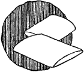Tailor's Chalk
When you want to mark places for tucks, plaits, construction points, skirt lengths, etc., the tailor's chalk is very handy. It comes in several colors and may be bought very reasonably at any notion counter.
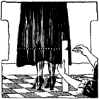A Skirt Marker
A skirt marker is also a necessity, as it insures an even skirt bottom. It is made of tin or cardboard and is notched in the number of inches the skirt is to hang from the floor.
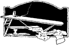Pressing Supplies
A well made garment must be well pressed. You will find many occasions to use your pressing supplies. They should consist of a well-padded ironing board, pressing cloths, sleeve board and flat irons. Special instructions for pressing are given in a later lesson.
Dress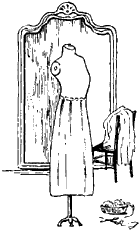 Form
The dress form is, of course, one of the most important parts of a home sewer's equipment. It enables her to see how the finished garment is going to look on her, it helps her secure a perfect fit, it simplifies the construction of the dress or blouse. The complete use of the dress form will be taken up in a later lesson.
Sewing 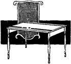Table
A cutting table is a great convenience, as it may be used in cutting, turning hems, basting and wherever it is necessary for the work to be held flat. Most of these tables are of the folding variety and take up very little room. They can be folded up and placed out of the way.
Pin Cushion
A very convenient pin cushion to use, especially in fitting, is one made with a strip to fasten it on the wrist. Just a small one about two inches long and one and a half or two inches wide is large enough.
You will find if you fill it with very fine sand that you have no dull pin points to pull threads in garments.
Now, dear friend, you have finished Lesson 1. Isn't it a wonderful feeling to have really made a start in this interesting study? Of course this could hardly be called a lesson, because it was so easy, but you will find as you go along that I take up each part in such easy steps that you will be surprised how quickly you grasp it.
I am so anxious to see your first work that I want you to turn the page right now and answer the questions on one of the sheets of examination paper I sent you and send it right in to me. Then, tomorrow you can start on Lesson 2.
I know you and I will have a great deal of fun together, as you go through this training. You can always count on me to help you as a true friend, whenever you need it and I sincerely hope that our new friendship will last for many, many years to come.
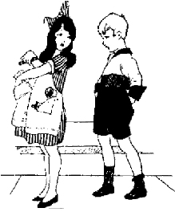
Foreword and Lesson 1
Questions
- If you have a sallow complexion, what colors in particular should you avoid?
- What lines should you avoid if you are thin?
- What should be the keynote of the stout woman's dress?
- Is the following statement true or false? "A stout woman should wear snug fitting clothes."
- For coarse work, what size needle should you use?
- What numbers of thread are best suited to machine sewing?
- When should you use silk thread?
- Why is an emery bag a useful article for your sewing basket?